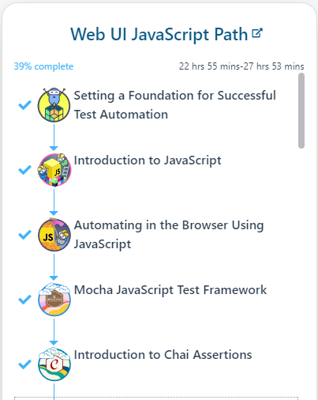
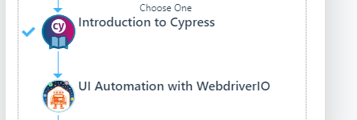

Cypress
Useful modules
@cypress/grep
Used to filter the tests to be run
cy-verify-downloads
Used in download tests
cypress-plugin-api
Using cy.api() instead of cy.request() to get more (and prettier?) information when run from GUI.
cypress-real-events
Using cy.realType() instead of cy.type() helps solving some issues when using cy.type()
start-server-and-test
Used to make local tests more efficient starting and stopping server etc.
This is not a cypress module, but are used when running cypress tests locally.
See module documentation for further info.
typescript
Needed to use typescript in Cypress
Training/courses
Cypress.io
This course looks very promising starting from scratch and explaining "everything" on the way:
Test Automation University
General and introduction
These courses give you a general foundation and overview of the building blocks cypress testing consist of:
- https://testautomationu.applitools.com/setting-a-foundation-for-successful-test-automation/
- https://testautomationu.applitools.com/javascript-tutorial/
- https://testautomationu.applitools.com/automating-in-the-browser-using-javascript/
- https://testautomationu.applitools.com/mocha-javascript-tests/
- https://testautomationu.applitools.com/chai-test-assertions/
- https://testautomationu.applitools.com/cypress-tutorial/
The courses mentioned above are the first 6 ones listed in the Web UI JavaScript Path:


Advanced/others
- https://testautomationu.applitools.com/advanced-cypress-tutorial/
- https://testautomationu.applitools.com/cypress-with-typescript/
API testing
- https://applitools.com/event/test-your-api-with-cypress/
- https://www.youtube.com/watch?v=mPZJdAH1alc
Ambassadours/experts
Filip Hric
- frequently new cypress tips on his blog
- courses
- workshops